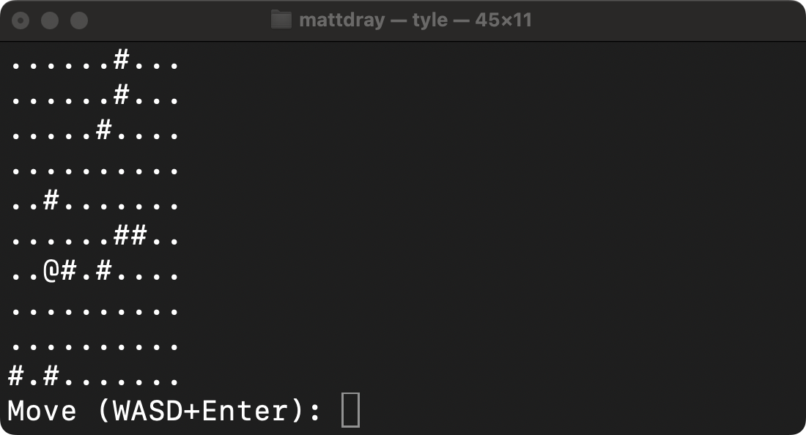

[project]
name = "2026-02-01-tyle"
version = "0.1.0"
requires-python = ">=3.12"
dependencies = []
tl;dr
I’m writing tyle to help in my quest to slay Python.
Very early access
I’ve started ‘tyle’, a concept Python CLI that contains the foundations for a little in-terminal tile- and turn-based game.
The rudimentary tool is available to install from GitHub (v0.1.0 at time of writing). I like uv for this job1:
uv tool install git+https://github.com/matt-dray/tyle.gitThen you can start a ‘game’ (heavy emphasis on those quote marks) from your terminal by typing:
tyle.......#..
..........
.##..#....
....#....#
......#...
.....@....
..#.......
........#.
..........
....#.....
Move (WASD+Enter): The gameboard is just a tile grid printed to the terminal. You (the @ symbol) can travel around the floor tiles (.), but not through obstacles (randomly-placed #) or off the map.
At the prompt you can type W and Enter to move up, for example. Q and Enter will quit.
Aaand that’s it for now.
Note
A quick update on changes in v0.2.0, made immediately after this post. I’ve added CLI options so you can do something like tyle -r 10 -c 20 -w 25 to set the starting count of --rows, --columns and --walls (see tyle -h for help). I also adjusted the column- and wall-count defaults and added a space between adjacent tiles; and introduced colours (but only if your terminal suports ANSI codes, like zsh in the gif below).

Gone rogue
This game style and ASCII-text ‘graphics’ may be familiar as the blueprint for the classic dungeoncrawling videogame Rogue (1980).
Other key features are turn-based interaction, procedurally-generated environments and player permadeath. Later games aped and adapted these features, giving rise to the ‘roguelike’ and ‘roguelite’ genres.
The scope for tyle is far tighter: I promise nothing. So let’s call this a ‘roguelike-like’ for now.
A sidequest
To explain the lore, I’ve been making some twee CLI projects to help me learn Python. First jot for recording little timestamped notes2, then pet for a mini cyberpet experience.
tyle is also a Python-backed CLI, but is helping me learn more about object-oriented programming and building my own classes, specifically. It’s nice to organise code into object ‘types’ that contain their own variables (properties) and functions (methods).
As someone with a background in R, I tend to think every nail can be hammered with a function. R supports classes, of course, most recently with the {S7} package3. But the approach feels far more at home in Python with its greater focus on ‘programming’ than ‘doing statistics’4.
A class act
First, a high-level overview of what tyle’s three main classes represent:
Tilerepresents each square on the gridTileGridrepresents the whole grid of tilesEntityrepresents the player character
Each of these have properties and methods that allow them to store data and be queried in certain ways:
Tileobjects store their representative symbol (e.g.#) and if they can be traversedTileGridobjects store and print the tile grid, while also assessing player movementEntityobjects store tile coordinates and hit points for the player
A tile-grid object is composed of many tile objects. Some tiles are designated as floor tiles (.) and others as walls (#). Think of the tile-grid as the ‘terrain’ layer of the game.
The player is not part of the terrain layer, but exists independently and carries its own coordinate properties. When printing the tilegrid with a drawing method, the player’s symbol (@) is printed preferentially. There’s logic to prevent the player from moving to non-traversable places (walls or off the map).
Grouting
What does it look like to set up one of these classes?
Here’s an example from the tiles.py file. The simplest possible example is Tile:
class Tile:
def __init__(self, symbol: str, traversable: bool) -> None:
self.symbol = symbol
self.traversable = traversableI’ve shown the type hints5 but hidden the docstrings for brevity.
To summarise, you:
- Declare with
class. - Use an UpperCamelCase name by convention.
define a function to__init__ialise the class, with reference to:self, i.e. a reference to the class instance itself.- ‘normal’ function arguments (
symbolis the text character representing the tile andtraversableis whether the tile can be moved across).
- Set properties that may just be the arguments, or passed through other functions.
define functions (methods) within the body of the class (not shown here because theTileclass doesn’t currently have any).
And then you can initiate a single instance like:
tile = Tile(".", True)You can then check parameters and run methods from the class. For example, we can use dot notation on our Tile instance to access the symbol parameter:
tile.symbol'.'Fire up the griddle
How does tyle generate a tilegrid from tiles?
Crucially, tile initiates distinct tile objects for every grid position. This means each one can have individual properties, like whether they’re a wall tile. Later we could give them properties for the presence of booby traps, for example.
We store the grid of tiles as a two-dimensional list (a list of lists). The index of:
- each list gives the tiles their row number
- each tile in each list gives them their column number
Here’s a simplified part of the create_grid() function, which uses list comprehension6 to generate the grid:
grid = [
[Tile("#", True) for _ in range(n_cols)]
for _ in range(n_rows)
]Printing grid will reveal the structure. Suppose we had n_rows = n_cols = 2 for a tiny 2 × 2 grid, we’d get something like this:
[[<__main__.Tile at 0x107a22120>, <__main__.Tile at 0x107a23170>],
[<__main__.Tile at 0x107a236e0>, <__main__.Tile at 0x107a23020>]]You can see the list of lists ([[],[]]) where each inner list contains two tile objects. We can index into it to get a tile at any given ‘coordinates’. So grid[1][0] would return the tile in the second row and first column.
You can see the default printing format for objects, which tells us where it was defined, its class and its unique memory address. Instead, TileGrid has a draw() method to print instead the symbol property of each Tile object (i.e. . or #).
Upper class
So that was a very simple example of the Tile class in action.
You can imagine how the Entity class has its own parameters like hp (hit points) and TileGrid has a draw() method to print the map to the screen.
Later we could create subclasses from the Entity class. Player and Enemy could inherit the properties and methods from Entity, but get their own unique ones too. Maybe Player could have a name, while Enemy could have a species (think goblin, rat or ingrate-who-puts-their-dirty-feet-up-on-the-train-seat).
Classes give us a much more manageable and readable way of organising and dealing with variables and functions.
Hack
But I’ve read about the {r.oguelike} R package on this blog before. Have you run out of ideas?
Uh-oh, I’ve been rumbled.
Listen, agitator: an R-function spaghetti was never the ‘right’ choice. Not least because that particular ‘game’ had to be played in the R console, rather than the terminal directly.
Python is probably more suited to this type of activity. In fact, Python can be used as a full-blown game engine, aided by tools like PyGame. In fact, there are several roguelike-specific packages to help you build roguelikes specifically, like libtcod7.
I’m ignoring these because I want to use this little project to help me learn Python skills, not roguelike-making skills, specifically. Classes, yes, but also stuff like type hints, docstrings, writing modules, creating CLIs, etc.
Do it with tyle
As ever, I may stop there8. But there are some obvious improvements that could also strengthen my Python skills.
For example, a bunch of stuff from {r.oguelike} could be interesting to translate here, like procedural dungeons, enemy battling and pathfinding, and an inventory.
We should also ‘listen’ for keyboard input with something like pynput. A much more natural approach compared to smashing the Enter key.
Of course, learning new stuff can feel like navigating through a dungeon full of goblins. But to avoid permadeath of coding skills you’ve just got to keep going tile-by-tile, amirite?
Environment
Session info
Footnotes
And
uv tool update tyleanduv tool uninstall tyledo what you think they do.↩︎Actually, I’ve been using jot everyday and it helps me keep track of what I’ve been doing, which is handy for completing weeknotes and timesheets.↩︎
I wouldn’t dream of taking the cutting edge and being frivolous with it.↩︎
Wow, a take that’s hotter than the sun.↩︎
Astral have brought ty out of version beta_BETA_draft_v0.0.0.0.0.900000, huzzah. You can check type hints cheaply with uv and without installing anything else, like
uvx ty check. Oruvx ruff formatanduv ruff checkfor linting and formatting. Real noice.↩︎And note the use of the underscore convention as a ‘placeholder’ variable. We don’t need to name the variable because we’re not actually using it.↩︎
Check out entries from 7DRL (the seven-day roguelike challenge), which includes may games written this way.↩︎
Take a shot every time you read that phrase on this blog.↩︎